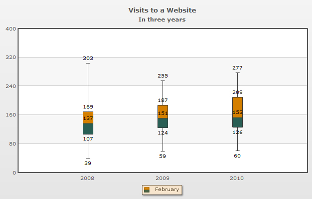
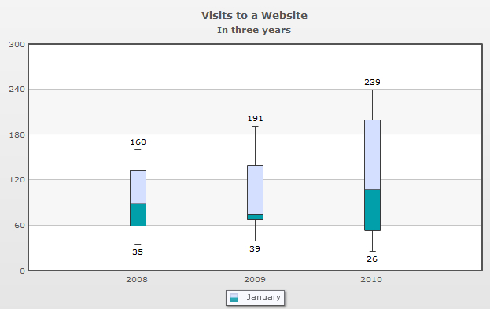

| Box and Whisker chart > Configuring five summary numbers |
||||||||||||||||||||||||||||||||||||||||||||||||||||||||||||||||||||||||||||||||||||||||||||||||||||||||||||||||
PowerCharts allows you to customize all the 5 summary numbers and their deviations according to your requirement. In this page we will discuss the following:
|
||||||||||||||||||||||||||||||||||||||||||||||||||||||||||||||||||||||||||||||||||||||||||||||||||||||||||||||||
| Show or Hide the five summary numbers | ||||||||||||||||||||||||||||||||||||||||||||||||||||||||||||||||||||||||||||||||||||||||||||||||||||||||||||||||
| The six attributes which are used to control the display of the five-summary numbers are: | ||||||||||||||||||||||||||||||||||||||||||||||||||||||||||||||||||||||||||||||||||||||||||||||||||||||||||||||||
Note that:
Let's see how all the five-summary numbers displayed in a chart. The chart will look like as under: | ||||||||||||||||||||||||||||||||||||||||||||||||||||||||||||||||||||||||||||||||||||||||||||||||||||||||||||||||
| 
The settings for the above chart is given below through showQ1Values and showQ3Values attributes: |
||||||||||||||||||||||||||||||||||||||||||||||||||||||||||||||||||||||||||||||||||||||||||||||||||||||||||||||||
<chart caption='Visits to a Website' subCaption='In three years' showQ1Values='1' showQ3Values='1'> ... </chart> {
"chart":{
"caption":"Visits to a Website",
"subcaption":"In three years",
"showq1values":"1",
"showq3values":"1"
}
} |
||||||||||||||||||||||||||||||||||||||||||||||||||||||||||||||||||||||||||||||||||||||||||||||||||||||||||||||||
| In the above data, within the <chart> element we have set showQ1Values and showQ3Values to '1'. This allows the chart to display the lower and the upper quartile values along with the minimum, maximum and the median values which are displayed by default. |
||||||||||||||||||||||||||||||||||||||||||||||||||||||||||||||||||||||||||||||||||||||||||||||||||||||||||||||||
|
To hide the five summary numbers selectively you need to individually set the value of the respective attribute to '0' which you may not want to display in the chart. Let's create a chart displaying only the maximum and minimum values. The chart will look like as under:
 The setting required in the data is as follows:<chart caption='Visits to a Website' subCaption='In three years' showQ1Values='0' showQ3Values='0' showMedianValues='0' showMinValues='1' showMaxValues='1'> ... </chart> {
"chart":{
"caption":"Visits to a Website",
"subcaption":"In three years",
"showq1values":"0",
"showq3values":"0",
"showmedianvalues":"0",
"showminvalues":"1",
"showmaxvalues":"1"
}
}
The attributes used to customize the median are given below:
Note: All the three attributes can be used in the <chart>, <dataset> and <set> elements. Customizing the upper and lower quartiles (Q1 and Q3) The quartiles of a set of data are spread as two boxes separated by the median. The roof of the upper quartile box represents the exact value of the upper quartile (Q3) . The base of the lower quartile box represents the exact value of the lower quartile (Q1).The attributes used to customize the quartile points and the boxes are discussed in the table below:
Customizing the minimum and maximum numbers (lower and upper whiskers) The chart displays the biggest number of a set of values as the upper whisker and the smallest number of the set as the lower whisker.The attributes used to customize the whiskers are discussed in the table below:
|